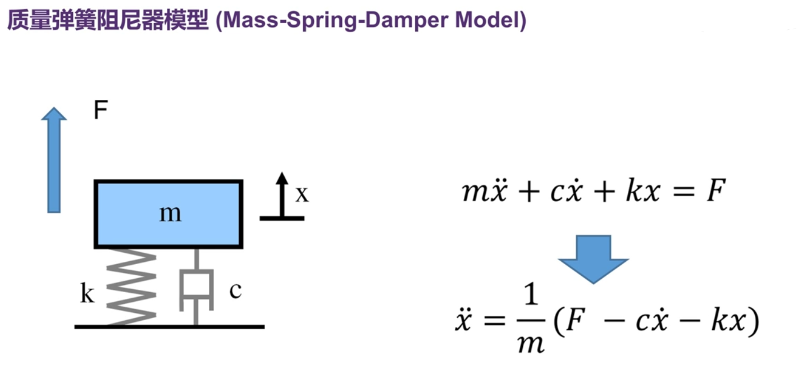
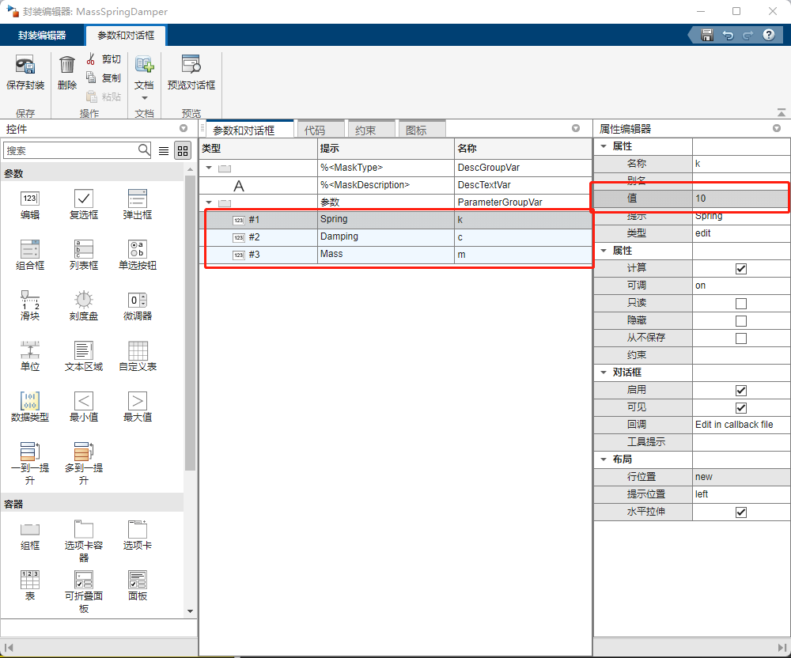
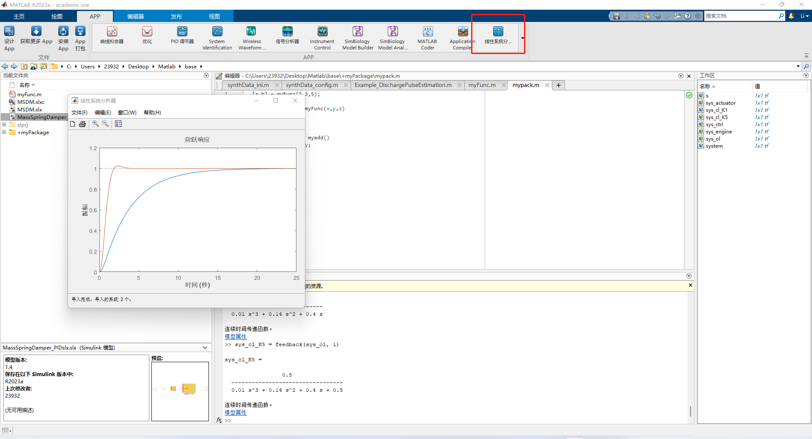
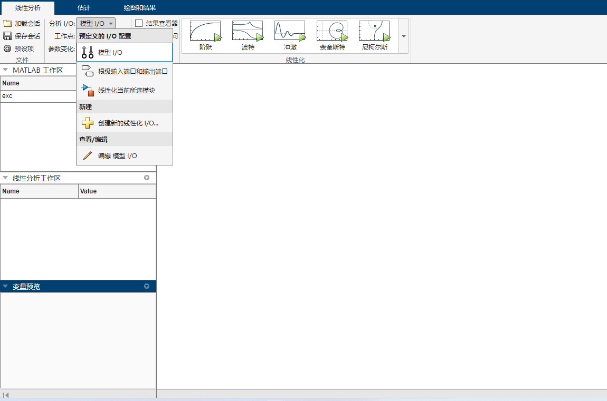

1、编程基础内容
1.1、常用变量举例
clear all%
whos a %a为变量，可以得到这个变量的基础内容
clear a %清除a变量
clc %清除且不保留历史记录
home %新建变量行并不清除内容
t = 1:10 %默认间隔1的向量
t = 1:0.2:10 %默认间隔为0.2的向量
A = [1 2 3;2,3,1] %空格和逗号都可以简单的表示行元素，分号则为另起一行
%矩阵的+-*都和变量类似，共轭转置转置'非共轭转置.’ .*按照元素相乘
myChars = 'abc' %变量类型为字符而非字符串
mystr = string('abc') %此即为字符串
mystr,reverse %字符串倒转，字符串还可以做相加等操作
mycell = {1,'c',string('abc')} %元胞数组
mystruct = struct('Name','Jiang','Score',100) %结构体1.2、脚本和函数
%%
%使用双百分号可以将脚本分节
%实时脚本：live editor
%实时脚本可以将每行函数运行的结果放在函数下面，保存起来，观看起来更加直观
%函数定义
function [m,n] = myFunc(x,y,z)
m = x + y + z;
n = x + y - z;
end
%注意文件名和函数名保持一致
%调用
[a,b] = myFunc(1,2,3)
%子函数
function [m,n] = myFunc(x,y,z)
m = myadd(x,y) + z;
n = myadd(x,y) - z;
end
function xy = myadd(x,y)
xy = x + y;
end
%嵌套函数
function [m,n] = myFunc(x,y,z)
m = myadd() + z;
n = myadd() - z;
function xy = myadd()
xy = x + y;
end
end1.3、循环体
for ct = 1:10
disp(ct)
end
%%
ct = 1;
while ct <= 10
disp(ct);
ct = ct + 1;
end
%%
a = 10;
if a > 5
disp('Ture')
else
disp('false')
end1.4、调试
%可以通过去掉一些顿号来输出更多信息
%可以在代码前面打断点，鼠标移动上去看对应的值
%断点可以改成条件断点，右键 Set/Modify Condition 输入条件1.5、路径
%调试脚本的过程中，如果脚本此时不存在当前目录下，可以将脚本对应目录在Current Folder中右键点击后选择Add to Path中的Selected Folders
%如果此时，存在多个路径下有同名脚本，就会产生只运行最后一个加入路径中的同名脚本
%这一项可以从Home窗口里的设置路径找到
%还有一种方式可以使用
mkdir +myPackage
%文件夹创建好后添加一个新的同名文件，假如说叫Pack
%调用Pack的方式很简单
myPackage.Pack%即可，一定要在父目录下调用，也就是能看到myPackage的文件夹下调用
%当然这个包可以有多级，只需要不停的mkdir +name
2、Simulink仿真环境
2.1、Simulink介绍
可以在Library中寻找合适的模块，建立对应的模型
要记住，Simulink是不具备向前兼容性的，所以如果两台电脑上的Simulink版本不同。可以在
File -> Export Model to -> Previous Version
在这个窗口中就可以将模型的版本转化成过去老的版本
2.1、简单模型

以此系统为例
搭建如图所示系统，并在命令行中输入对应变量的值，方便调试，使用示波器进行观察输出
这里有个快捷键ctrl i 可以快速反转模块
将仿真时间跳到50s，可以看到仿真结果带有锯齿状，这个和求解器的设置有关
现在的求解器是变步长自动求解器，虽然这个功能很好用，但是，在一些场景中这类型的求解器往往都会有一定的缺点
虽然Matlab的求解其有很多，比如ode45算的很快但是可能会出现结果不稳定的情况，比如ode23s算的很慢，因为每一步都会计算一个雅可比矩阵，但是算的很稳定
这里先将步长改小再选择ode45看一下效果

现在看起来好的很多了
2.2、控制器设置
以上一小节的内容为例，将这次的系统做一下修改
由于上一次制作的模型比较简单
这里将其分装起来，按下Ctrl M，调出Create Mask 窗口添加对应变量

在次窗口中添加对应变量以及提示信息还有默认值
设置完成后，再次双击模块是修改其默认值，如果要修改这个模块的内容需要点击左下角的箭头
添加Sum 和 PID Control内容，添加完成后稍微调整一下PID参数
PID的具体原理可以参考我的其他文章
由于在控制器上实现这种系统一般都是离散的，并非连续运行的，会有最小的时间参数
这里我们将系统改为连续的看一下
似乎基本看不出什么变化，这可能是应为采样率过高
我们可以从
调出高亮显示离散变量传递的路径和位置
2.3、控制系统工具箱
我们以这个引擎控制系统为例
sys_engine = tf([1],[0.02 0.2]) %传递函数构建 第一个参数是分子，第二个参数从大到小是s阶数从大到小
s = tf('s')
sys_actuator = 0.1/(0.5*s + 2)
%上面这两句是另一种创建传递函数的方式
system = sys_actuator * sys_engine
%级联传递函数，另一种表示方法
system = series(sys_actuator , sys_engine)
%将控制器传递函数也加进去
sys_ctrl = 1/s
sys_ol = sys_ctrl * system
%上面为开环传递函数
sys_cl_K1 = feedback(sys_ol,1)
%闭环系统的传递函数
step(sys_cl_K1)
%画出闭环传递函数的阶跃响应，从图中可以看到系统虽然是稳定的，但是响应较慢，所以我们可以通过调整K的值来使系统响应更加迅速
rlocus(sys_ol)
%画出开环传递函数的根轨迹图，在反曲线中选择一点如图sys_ctrl = 5/s
sys_ol = sys_ctrl * system
sys_cl_K5 = feedback(sys_ol, 1)
%现在已经有了两个传递函数，我们可以使用APPs里面的Linear System Analyzer来比较(线性系统分析器)
%打开之后点击Import ，选择对应的线性系统来比较
A = [0 1;-2 -3];
B = [0;1];
C = [1 0];
D = 0;
sys = ss(A,B,C,D)
%使用矩阵得到状态空间的模型，同样也可以获得阶跃响应Bode图
step(sys)
bode(sys)
tf(sys)%也可以转换成传递函数
ss(sys_engine)%将传递函数转换成状态空间模型
%%
A = [0 1 1; 0 1 0; 0 0 1]
B = [0;1;0]
%上面这个系统是不可控的，我们可以观察矩阵的秩
[B A*B A*A*B]
ctrb(A,B)
%上边是两种取得其秩的方式
%%
%上面的模型都是连续模型，而通常我们使用的都是离散模型，下面使用Matlab来构建离散系统
tf([0 1],[2 3], 'Ts', 0.1)%采样时间为0.1的模型
%对于已经定义好的模型可以用以下方法转化
c2d(sys_engine,0.01)
%这里面有对应的参数可以选取
c2d(sys_engine,0.01,'zoh')%零阶保持器——默认
c2d(sys_engine,0.01,'foh')%一阶保持器
c2d(sys_engine,0.01,'tustin')
d2c(ans)%离散后的系统还可以转换回连续系统，不过由于离散系统本身丢失了一部分信息，导致其不能完全等于原来的系统
d2d()%使用此函数将离散系统的采样频率改编成另一个采样频率
system
lsim(system,[1;1;2;2;3;3],[0:0.1:0.5])%使用此函数对系统进行仿真，这里第二个输入为一列输入向量，第三个是对应输入的时间
%除此之外还可以用另一种方式来仿真，使用ode45等求解器来仿真
%首先定义一个函数
function dx = mySystem(t,x)%第一个必须为时间，第二个为状态向量
dx = [0;0];
dx(1) = x(2);
dx(2) = -x(1);
end
%保存
ode45(@mySystem, [0 10], [1;2])%第一个输入必须加@作为句柄，第二个输入为时间区间，第三个输入为初始状态
%运行后，就会得到系统的图
[t,y] = ode45(@mySystem, [0 10], [1;2])%非画图，只得到对应的数据
%阶数越高的线性系统就应该使用传递函数表示么？
%×，高阶系统最好使用传递函数表示2.4、简单模型建立
系统有两个输入，一个是油门和方向盘，模型并未考虑不同轮子之间的动态，可以称此系统为单轮车/独轮车模型
最终模型如图
对于这个系统我们可以通过一种方式来获取他的系统传递函数，输入那里右键线性分析点->开环输入，输出那里右键线性分析点->输出测量，这两个对于系统的仿真是没有任何影响的，只是用来获取传递函数的
随后打开线性化器 linear analysis

随后使用默认的缺省设置，点击step 阶跃，等待其画出对应的阶跃图
我们可以在左边的线性分析工作区中看到我们的状态空间的对象，这个就是我们对输入输出线性化得到的结果，可以将它右键导出到工作区，然后使用tf(linsys1)，得到的结果是一个积分器，因为我们的系统油门输出到速度输出是个普通的积分关系
同样的我们也可以对模块进行线性分析，左键选中要分析的模块，在线性化器中按照图示选择，随后生成对应图谱
对于这些非线性系统，我们在不同的状态点，线性化的结果是不一样的，我们这里选的初始值是
在线性化的窗口中，我们还能选择模型的初始条件，在其中可以选择其为模型的初始条件或自己设定配平，设定后弹出对话框里可以选择参数是否已知或稳态
如果我们什么都不修改，直接点击开始配平，他就会自动帮我们计算相应的结果

以对应的结果去线性化得到的结果也是不同的
下面我们对我们现有系统做一个修改，将油门和车速做一个反馈调节，将系统初始状态的速度改为0，PID参数 1 0 0，运行看一下效果
由于这个参数是随便给定的，所以这里的效果不是很好，所以我们可以使用PID调节器去整定这个参数
在PID调节器中，拖动上面两个滑动条来得出对应的曲线和参数，调整好之后点击更新模块，就可以将参数输入进模型里了
出了使用simulink中的线性化器外，我们还可以用命令行的方式去线性化，如图
以这个策略为例，建立第一个完整的程序讲解